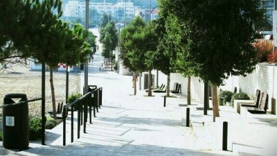
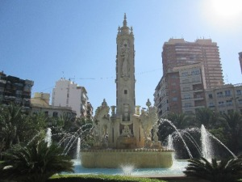
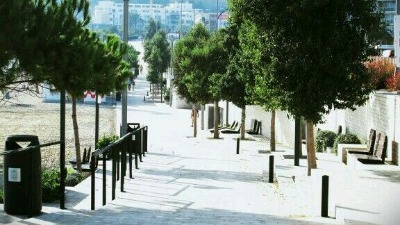
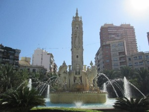

Este proyecto surge a raíz de una pasión de su autor, el placer por escribir.
Durante un tiempo, me dediqué a plasmar en papel lo que veía, me preocupaba y sentía.
Hoy tengo esa faceta un poco abandonada, y en este pequeño y sencillo blog he recopilado mis poemas favoritos.
Quien así lo desee, puede pasarse por el proyecto original.
Las imágenes son algunas propias, y otras están sacadas de páginas como Pixabay e Imágenes de Google;
todas se hallan supuestamente libres de derechos de autor. De haber alguna que así no fuese, mediante este correo me lo pueden hacer saber
y gustosamente corregiré dicho error.
Como último regalo, unas fotos de mi ciudad, Alicante:
 de noche")

 


